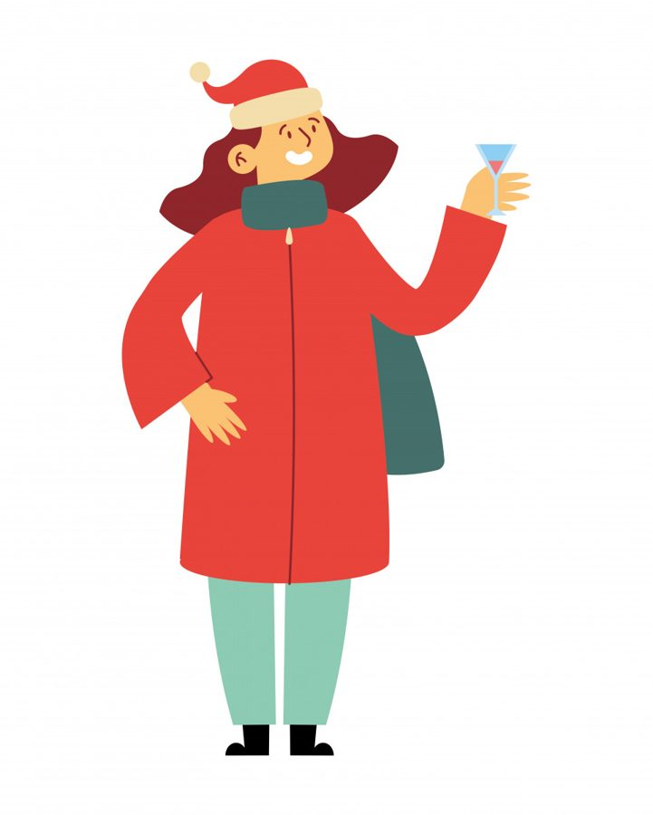

Бывает, что в декабре по коже словно пробегает холодок - не от мороза на улице, а от внутреннего вопроса: «А что, собственно, я сделала за этот год?». Соцсети пестрят чужими итогами: громкие карьерные взлёты, идеальные семейные фото, списки прочитанных книг. А в вашем списке - обычная жизнь: работа, которая часто выматывает, бытовые дела, которые не заканчиваются, и эта неловкость на корпоративе, когда все говорят о достижениях, а вам хочется спрятаться в угол.
Знакомо? Это ощущение - не ваша личная неудача, а феномен декабря. Этот месяц, когда весь мир вокруг начинает подводить итоги, работает как мощный триггер. Всё, что было фоном (лёгкая неудовлетворённость, хроническая усталость от попыток всё успеть, тихое чувство, что живёшь не совсем своей жизнью) вдруг выходит на первый план и кричит. Но это всего лишь сигнал вашей психики, которая устала от бега и наконец требует вашего внимания не к достижениям, а к себе.
И в этот момент рука часто как будто сама тянется к «обезболивающему»: к бокалу вина, который притупит остроту момента, к сладкому, которое создаст иллюзию заботы, к бессмысленному скроллингу маркетплейса в поиске хоть какой-то, пусть мимолётной, радости. И это работает быстро и без вопросов, вам и правда становится легче, но ненадолго. Потому что это не лечение, а анестезия. Пока вы выбираете новую кофточку, настоящая боль - та самая, от усталости, от чувства, что вас не видят и не ценят (даже вы сами), - никуда не уходит. Она ждёт в тишине, когда шопинг закончится.
Но что, если попробовать иначе? Не затыкать этот голос, а развернуться к нему лицом. Спросить не «чего я не достигла?», а «чего мне по-настоящему не хватало весь этот год?».
Ответ часто лежит не в плоскости свершений, а в области чувств. Вам не хватало не новой должности, а признания, что ваших ежедневных усилий достаточно. Не идеальных отношений, а покоя - возможности быть неидеальной и всё равно любимой. Не списка выполненных дел, а права на паузу - просто посидеть в тишине без чувства вины.
Новый год манит обещанием «начать всё с чистого листа». Мы строим грандиозные планы, как будто с первым ударом курантов станем другим человеком. Но новая жизнь начинается не с даты в календаре. Она начинается в ту самую секунду, когда вы решаетесь на один маленький, часто негероический шаг к себе. Не «с понедельника начать новую жизнь», а сегодня дать себе разрешение лечь спать на час раньше. Не «наконец-то полюбить себя», а не ругать себя за съеденную печеньку. Это и есть та самая практика контакта с собой: не через громкие лозунги, а через признание своих потребностей.
Именно из этих маленьких шагов и рождается то самое состояние, которое чувствуется на расстоянии - внутренняя цельность. Когда вы не отворачиваетесь от своей усталости, а даёте ей место. Когда перестаёте обесценивать свои небольшие победы. В таком состоянии меняется всё: осанка, взгляд, тембр голоса, вы перестаёте метаться между ожиданиями других и начинаете опираться на себя. И это - самая мощная сила притяжения. Она, как маяк, начинает привлекать не что попало, а только то, что по-настоящему ваше: людей, с которыми можно быть живой, возможности, которые не требуют надевать маску.
Помните, что декабрь - не экзаменатор. Это зеркало, в котором можно увидеть не только трещины, но и свою уставшую, но живую, настоящую красоту, которая всё это время была здесь. И которая имеет полное право на свою жизнь - не с 1 января, а прямо сейчас.
Статья подготовлена на основе материалов психологической практики. Если тема откликнулась, вы можете связаться со мной для обсуждения возможности индивидуальной работы.
Статья опубликована на b17.ru.